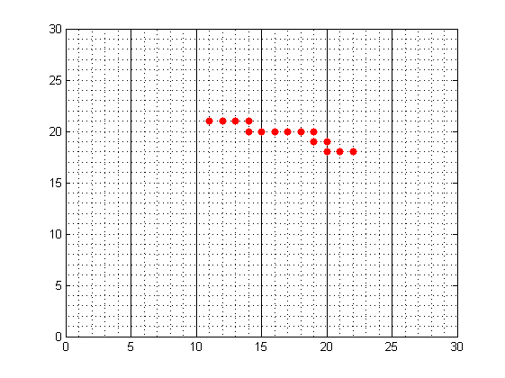

% %Protein folding program created using MATLAB %Based on Chapter 12 Computational Physics, N Giordano and H Nakanishi, % Pearson, 2006 and % E Shaknovich, G Farztdinov, A Gutin and M Karplus, ""Protein folding bottlenecks: % A Lattice Monte Carlo Simulation", Phys. Rev. Lett., 67, 1665, (1991). % Written by Kevin Berwick. % clear; %Initialise number_of_runs=500; monomer_number=20; protein_length=15; low_interaction=-2; high_interaction=4; % Generate the interaction matrix % Interaction values from Cleland, Andrew and Wisthoff, Addison, % "Computational Studies of Protein Folding" (2012). % Annual Linfield College Science and Social Science Symposium. % Event. Submission 24. % http:%digitalcommons.linfield.edu/studsymp_sci/2012/all/24. % Also in Giordano book J_interaction=randi([low_interaction,high_interaction], monomer_number,monomer_number); % Generate the initial protein matrix protein=make_protein_matrix(protein_length, monomer_number); % % % Choose a link to consider at random for step=1:number_of_runs % link_number=ceil(protein_length*rand); % % if ((link_number > 2 ) & (link_number <= protein_length-1)); % It is an inner link % NEED TO REVISIT THIS TO LOOK AT EDGE LINKS % Randomly pick a neighbouring point from the eight available on the lattice, % direction=ceil(8*rand()); %There are 8 neighbours you can jump to on the square lattice % % switch direction case 1 % choose neighbour above right x_new=protein(2, link_number)+1; y_new=protein(3, link_number)+1; case 2 % choose neighbour to right x_new=protein(2, link_number)+1; y_new=protein(3, link_number); case 3 % choose neighbour below right x_new=protein(2, link_number)+1; y_new=protein(3, link_number)-1; case 4 %choose neighbour below x_new=protein(2, link_number); y_new=protein(3, link_number)-1; case 5 %choose neighbour below left x_new=protein(2, link_number)-1; y_new=protein(3, link_number)-1; case 6 % choose neighbour left x_new=protein(2, link_number)-1; y_new=protein(3, link_number); case 7 % direction must be 4, above left x_new=protein(2, link_number)-1; y_new=protein(3, link_number)+1; otherwise % direction must be above x_new=protein(2, link_number); y_new=protein(3, link_number)+1; end; % Check site is not occupied already occupied=site_occupied(x_new, y_new, protein); % Check if stretching occurs as a result of the suggested move stretched=check_stretch(protein, protein_length, link_number, x_new, y_new); if ~occupied && ~stretched; % unoccupied site update location protein(2, link_number) = x_new; protein(3, link_number) = y_new; end; plot(protein(2,:),protein(3,:), '.r','MarkerSize',20) grid on grid minor axis([0 30 0 30]); drawnow; end;